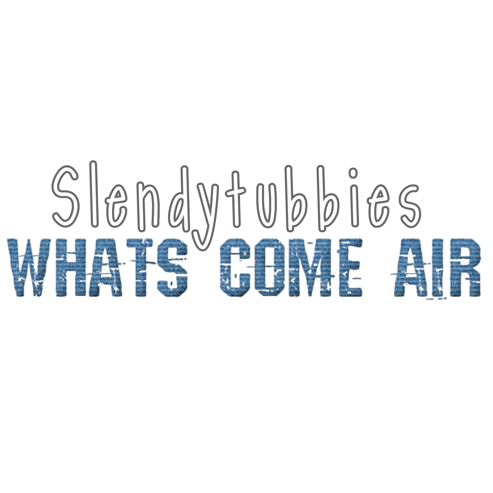

pasate por aca para ver los anuncios del fan game ;)
Prototype
Pre Alpha
Alpha
Alpha 2

slendytubbies Whats Come Air es un fangame que en la historia es una secuela inderecta de ST3 enfocada en nuevos personajes y ubicada 5 anios despues de la campania y el DLC.
5 anios despues de la Tubbie Masacre, muchas cosas han cambiado, los militares han quedado un poco mas en aprieto y esta historia sigue a un grupo de ellos llamado U.P.T haciendo misiones, dependiendo de tus decisiones el grupo puede terminar bien o mal, a diferencia de ST3 hay diferentes rutas y tus decisiones...si importan
el online sera real, y tendra un sistema de customziacion muy avanzado, podras ponerte tono de piel, pelo, ropa, armas en la espalda, ademas de que no hay un sistema de skins, hay un sistema de OCs, puedes editar sus conexiones, y en cuanto mas juegas y mejoras jugando se ve reflejado en el medidor de estadisticas
bueno, el juego tendra un sistema de desarrollo similar a juegos como hello neighbor, la primera version descargable es el Prototype, luego la pre alpha como una Actualizacion mas grande y asi con alphas 1,2,3,4,5 y cuantas sean necesarias hasta llegar a la demo y luego la beta con su 1.0,1.1,1.12 Etc
la trama de los primeros 7 capitulos ya esta planeada...si, 7, no se como comprimir la historia tan grande y ya esta planificado en historia para que cuadre
el resto de capitulos pueden revelar algo con su nombre ;)
pasate por aca para ver los anuncios del fan game ;)